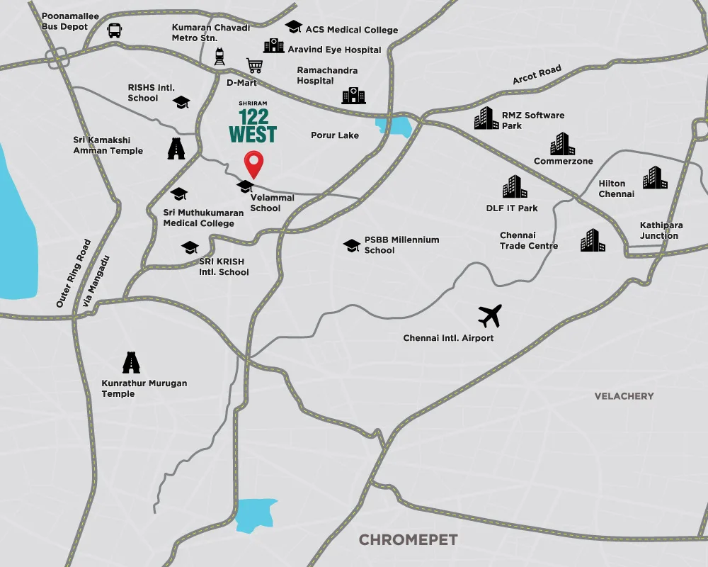

Mangadu, sitting just off the Porur corridor in West Chennai, has quietly become one of the city's more interesting entry points for both end-users and investors. It offers a genuinely shorter commute to an established employment hub than most of West Chennai's newer micro-markets, at a price point that still undercuts Porur itself. This guide looks at Mangadu and the wider Porur corridor from an investment lens: connectivity, employment hubs, social infrastructure, and the growth drivers that matter for anyone weighing a purchase here over the next few years.
1. Why Mangadu, Specifically
West Chennai's real estate story over the last decade has largely been written by Porur, anchored by the DLF IT Park cluster and its associated commercial, retail and residential ecosystem. Mangadu benefits from proximity to that same cluster without carrying Porur's own, now-elevated land costs. It's a familiar pattern in growing cities: demand and pricing pressure in an established micro-market pushes outward into adjacent, still-developing pockets, and Mangadu is currently in that phase relative to Porur.
2. Connectivity: Porur, ORR and Poonamallee High Road
Mangadu's core connectivity advantage is that it sits within a genuinely short 10-15 minute reach of three separate arterial corridors rather than depending on just one:
- Porur & DLF IT Park: approximately 10-15 minutes, the primary employment and commercial anchor for the corridor
- Outer Ring Road (ORR): approximately 10-15 minutes, connecting onward to other parts of the city's ring-road network
- Poonamallee High Road: approximately 10-15 minutes, one of Chennai's older, established arterial roads
- Muthukumaran Medical College: approximately 10-15 minutes, a notable healthcare and education anchor in its own right
Having three separate arterial options within a similar commute window, rather than a single access road, is a meaningful resilience factor: traffic disruption on any one corridor doesn't strand the area the way it would in a location with only one realistic route out.
3. Upcoming Metro Connectivity
Upcoming Metro connectivity is planned for the corridor, generally cited within a similar 10-15 minute reach from Mangadu once operational. This is not live infrastructure today, and we're deliberately not attaching a completion date to it here since none has been reliably published; treat it as a genuine medium-term upside rather than a reason to expect an immediate price re-rating. Historically, in Chennai as in most Indian cities, residential pricing in a corridor tends to move in two distinct phases around a Metro line: a modest anticipatory rise once construction visibly begins, and a larger re-rating closer to actual operational launch. Buyers entering before either of those phases are, in principle, capturing more of that upside than those who wait.
4. Employment Hubs Beyond Porur
While Porur and the DLF IT Park cluster are the nearest and most immediate employment draw, the wider catchment reachable from Mangadu is broader than IT alone:
- MEPZ Tambaram: approximately 20 minutes, an export-processing and industrial employment zone
- Oragadam Industrial Area: approximately 25 minutes, one of Chennai's significant automotive and manufacturing clusters
This dual IT-and-industrial catchment matters for rental demand specifically: a corridor that draws only from software employment tends to see rental demand rise and fall with that single sector's hiring cycles, while a corridor that also reaches into manufacturing and export-processing employment has a second, largely uncorrelated demand source underpinning it.
5. Schools and Healthcare
Social infrastructure is one of the harder things for a fast-growing corridor to build out at the same pace as new residential supply, so it's worth checking specifically rather than assuming. Mangadu's current reach includes:
- Schools: SRM Public School and Velammal Vidyashram, both roughly 10-15 minutes away, and SRM University at approximately 10 minutes
- Hospitals: SRM General Hospital at approximately 10 minutes, and Hindu Mission Hospital at roughly 20 minutes
- Landmarks and entertainment: Vandalur Zoo and Shriram Gateway, both approximately 5 minutes away
The presence of an established university (SRM University) directly in the catchment is worth calling out specifically, since a large, stable institutional employer and its associated staff and student population is itself a meaningful, relatively recession-resistant source of rental demand, distinct from either the IT or industrial employment drivers already covered above.
6. The Parandur Airport, as a Growth Driver
The planned Parandur Airport is one of the more frequently cited long-term growth drivers for West Chennai as a whole, and Mangadu's position on the Porur corridor puts it within the broader zone of influence that a new airport typically generates. We want to be precise here rather than overstate this: no specific commute time from Mangadu to the Parandur Airport site has been officially published as of this review, so we are deliberately not quoting one. What can be said with more confidence is the general pattern: new airport infrastructure tends to lift land values and rental demand across the surrounding corridor over a multi-year horizon, both directly (aviation and logistics employment) and indirectly (the general infrastructure investment that tends to accompany airport development). Treat this as a genuine, structural long-term tailwind for the corridor rather than a near-term catalyst.
7. The Investment Case, Summarised
Putting the pieces together, Mangadu's investment case rests on four distinct legs rather than one: a genuinely short commute to an established employment hub (Porur/DLF IT Park) at a price point below that hub itself; three separate arterial road connections rather than a single access route; a dual IT-and-industrial employment catchment that broadens rental demand beyond software hiring cycles alone; and two credible, if not-yet-realised, medium-to-long-term catalysts in the upcoming Metro and the planned Parandur Airport. No single one of these is unique to Mangadu, but the combination of an already-strong current commute profile with multiple pending upside catalysts is a genuinely favourable setup for a buyer with a multi-year horizon.
The trade-off, as with any corridor that hasn't fully arrived yet, is that some of that upside is not yet realised: the Metro isn't operational, the airport isn't built, and social infrastructure, while present, is still less dense than in more established parts of Chennai. Buyers looking for immediate, fully-built-out infrastructure should weigh that against the lower entry price they're paying to be early.
8. A Featured Project in the Corridor
Shriram 122 West, on Shriram City Road in Sri Pandian Nagar, Mangadu, is a current example of the kind of inventory this corridor's growth case is attracting: a premium high-rise township by Shriram Properties Limited across 4.98 acres with 75% open space, offering 2, 2.5 and 3 BHK homes from ₹57 Lakhs onwards, with a 20,000 sq.ft clubhouse and an integrated commercial zone. We've covered this specific project's pricing, floor plans, RERA status and possession timeline in detail in our companion review: Shriram 122 West: Price, Layout & RERA Review. If the locality case made above resonates with your own investment horizon, you can enquire about current pricing and availability directly, or reach us on WhatsApp for a broader shortlist across the corridor.
Who This Corridor Suits
Mangadu and the wider Porur corridor suit a buyer who wants proximity to an established West Chennai employment hub without paying Porur's own current prices, and who is comfortable holding through the multi-year window before the Metro and the Parandur Airport are actually delivered. It's a weaker fit for a buyer who needs fully-mature social infrastructure and live Metro access today, since parts of that picture are still in progress rather than complete.